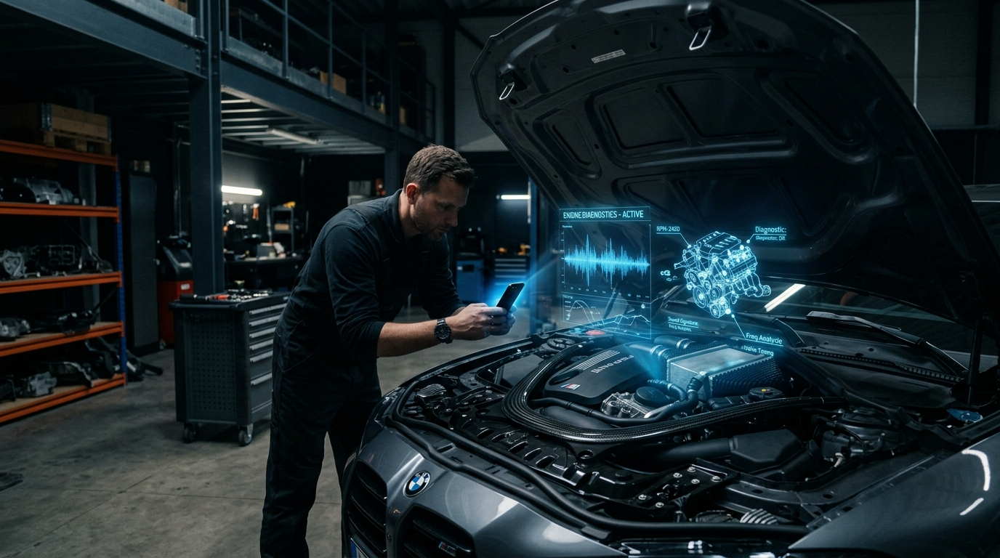
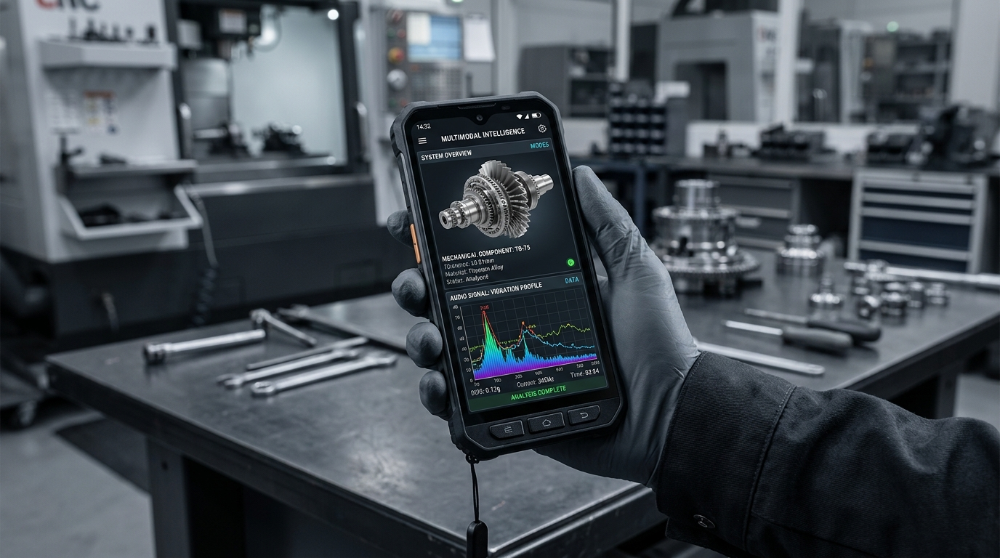
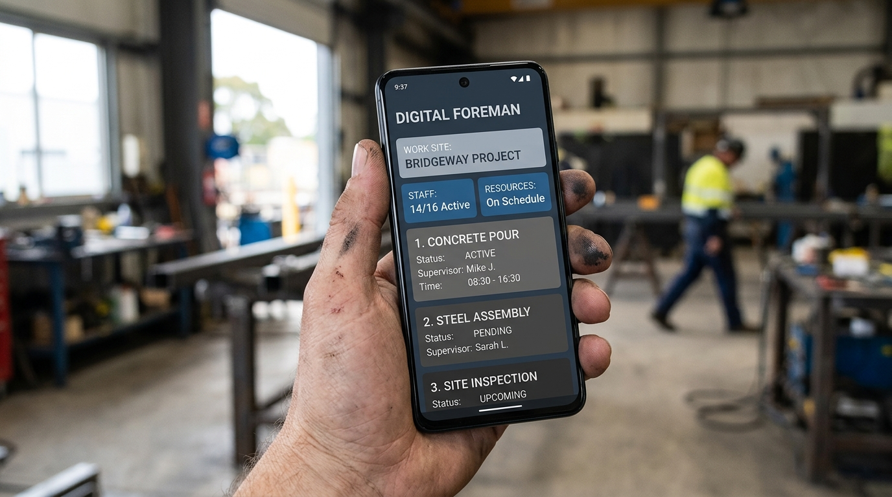

Listen & Fix:
Meet Your New AI-Powered Digital Foreman
Discover Listen & Fix, the AI-powered 'Shazam for Engines' that uses multimodal intelligence to diagnose and guide your DIY repairs with expert precision.
We’ve all been there: you’re driving down the highway or just trying to get a load of laundry done when you hear it—that dreaded "clunk-clunk-squeal" coming from somewhere deep inside the machine. Usually, this is the part where you start sweating, wondering if you’re looking at a $500 repair bill or a weekend spent crying over a 400-page manual written in technical jargon.
But what if you could just point your phone at the problem, let it "listen" to the sound, and have a professional mechanic tell you exactly what’s wrong and how to fix it? That is the core promise of Listen & Fix. By combining the power of Google’s Gemini 1.5 Flash model with a "just-in-time" data pipeline, this platform acts like a "Shazam for Engines." It doesn't just guess; it analyzes audio signatures, visual wear patterns, and real-time technical manuals to give you the confidence to pick up a wrench. Whether you are a total beginner or a seasoned DIYer, Listen & Fix is designed to bridge the gap between mechanical mystery and a job well done.
The Superpower of Multimodal Intelligence
So, how does an app actually "know" that your fan belt is loose just by hearing it? It’s all about a digital superpower called multimodal intelligence. While older diagnostic tools might only look at one thing—like an error code from your car’s computer—Listen & Fix uses a blend of audio, video, and image analysis.
When you record a clip of your engine knocking, the AI isn't just looking for loud noises; it's analyzing high-definition audio nuances and subtle frequency shifts. It compares these specific sounds against thousands of known mechanical failures in its database. At the same time, the system can look at a photo of your engine bay to spot frayed wires or fluid leaks that you might have missed. By fusing these different senses together, the AI can catch a bearing failure or a micro-fracture long before it turns into a catastrophic breakdown. It’s like having a mechanic with X-ray vision and perfect hearing standing right next to you.


The Four-Step Path to Repair Success
The app is built around a super-smooth "wizard" interface that takes the guesswork out of the process. It follows a simple four-step workflow: Capture, Details, Analyzing, and Results.
First, you "Capture" the issue by recording the sound or taking high-res photos. Next, the "Details" step asks a few quick questions—like the make and model of your appliance and how comfortable you are with tools. While the "Analyzing" step happens, you aren't left staring at a spinning circle; the app uses a live status feed to give you real-time updates like "Analyzing engine harmonics..." or "Checking thermal signatures." Finally, you get your "Results"—a full RepairGuide that includes a diagnosis, a confidence score (so you know how sure the AI is), and a custom-tailored plan to get things running again. It’s designed to be snappy and informative, keeping you in the loop every second of the way.
The Digital Librarian: Accuracy Without the Guesswork
One of the biggest problems with standard AI is that it can sometimes "hallucinate" or give you generic advice that doesn't apply to your specific dryer or car. Listen & Fix solves this using a process called Retrieval-Augmented Generation (RAG). Think of this as a digital librarian that works at lightning speed.
The moment you identify your equipment, the system’s "Document Crawler" sprints out across the web to trusted sites like iFixit and official manufacturer databases. It finds the exact service manual for your specific year and model, strips out all the annoying ads and filler, and feeds the relevant torque settings and tool requirements directly into the AI. This means the advice you get isn't just "general repair tips"—it’s the specific step-by-step instructions meant for your exact machine, grounded in real-world technical documentation.
The Digital Foreman: Design That Inspires Trust
Repairing expensive equipment is high-stakes, so the app's design—nicknamed the "Digital Foreman"—is all about authority and clarity. This professional-grade workspace is designed to transition seamlessly from the complex AI analysis to a practical tool you can use in the heat of the moment.
You won't find any distracting neon colors or cluttered menus here. Instead, the UI uses stable blues and charcoal tones to create a "calibrated instrument" feel. One of the most practical design choices is the "No-Line Rule." Instead of using messy borders to separate sections, the app uses subtle shifts in background tones to guide your eye. This creates a clean, "Technical Editorial" look that prevents eye strain and makes the screen easy to read even if you're in a dimly lit garage or trying to navigate the app with greasy hands. The typography is also carefully chosen: "Inter" for big, clear headlines and "Public Sans" for detailed instructions, ensuring you never misread a crucial measurement.

Smart Sourcing and Safety First
Knowing what’s wrong is only half the battle; you also need the right parts and you definitely don't want to get hurt. Listen & Fix has an automated procurement system that identifies the exact part numbers you need and checks local shops in real-time. It even gives you a "Supplier Matrix" so you can see who has the part in stock and how long delivery will take.
But before you touch a single bolt, the system triggers mandatory safety protocols. If you're working on a car, it’ll remind you about jack stands; if it’s a dishwasher, it’ll walk you through turning off the circuit breaker. If the AI sees a confidence score below 89% or identifies a "Critical" danger, it will automatically flag the job for expert review. It’s about empowering you to do the work yourself without taking unnecessary risks.
Conclusion
At the end of the day, Listen & Fix is about more than just fixing a broken appliance; it’s about taking back control. In a world where technology often feels like a "black box" that we aren't allowed to touch, this platform gives you the keys to the kingdom. By turning complex data into simple, actionable steps, it removes the fear of the unknown. You don't need to be a master mechanic to keep your home running smoothly—you just need the right partner. With the "Digital Foreman" in your pocket, that scary clunking sound isn't a reason to panic anymore; it’s just the start of your next successful DIY project.